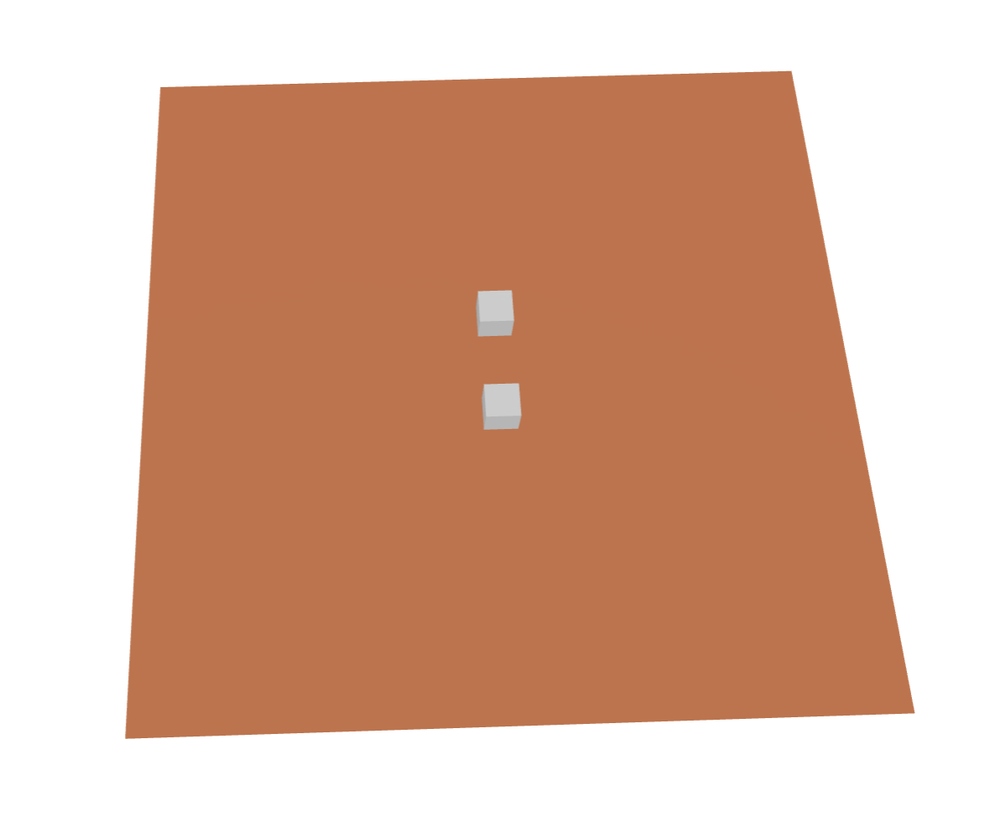
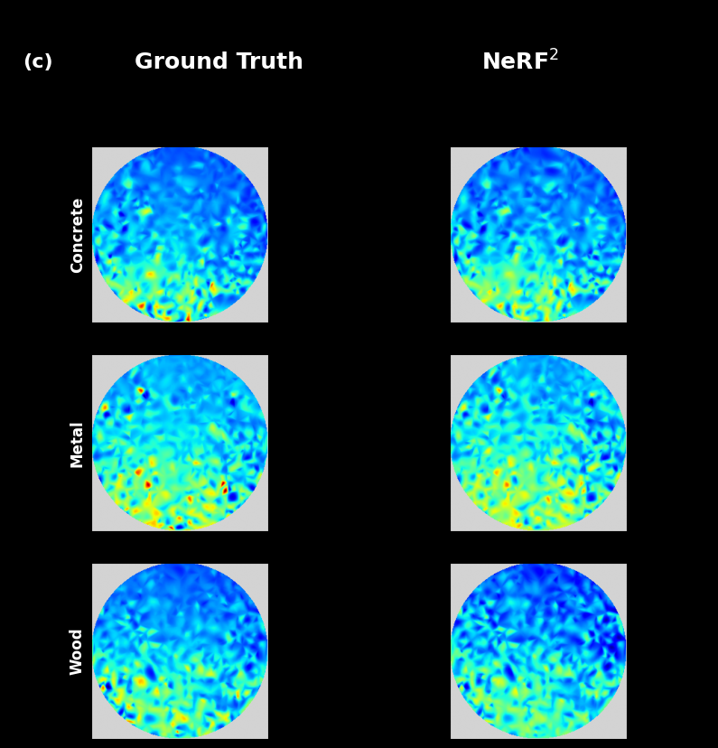
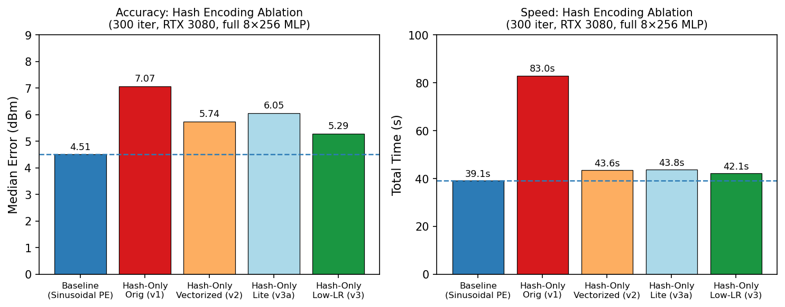

Synthetic Blender scene used to benchmark NeRF² across materials.
Reproduced and extended NeRF², a neural radiance field model adapted for RF signal propagation through physical environments. The original implementation was tightly coupled to CUDA, so the first phase was a ground-up portability pass that made the renderer, training loop, and model run correctly on Apple Silicon through the MPS backend.
The project then expanded past reproduction into two research directions: controlled synthetic benchmarking with NVIDIA Sionna and an efficiency study inspired by Instant-NGP. That turned the work from “can I rerun the paper?” into “what actually governs accuracy, generalization, and speed for radio NeRFs?”


The project ended up being most valuable where it contradicted the easy story. Porting the code proved NeRF² is reproducible on Apple Silicon, but the efficiency work showed that radio is not just image NeRF with different labels. The representation is learning attenuation and multipath structure rather than color, and that changes which approximations are safe.
That is why the page focuses on both wins and limits: reproducing baseline performance, building a benchmark with controllable physics, and identifying where common NeRF acceleration tricks stop transferring cleanly. For a research project, those negative results were as useful as the positive ones.